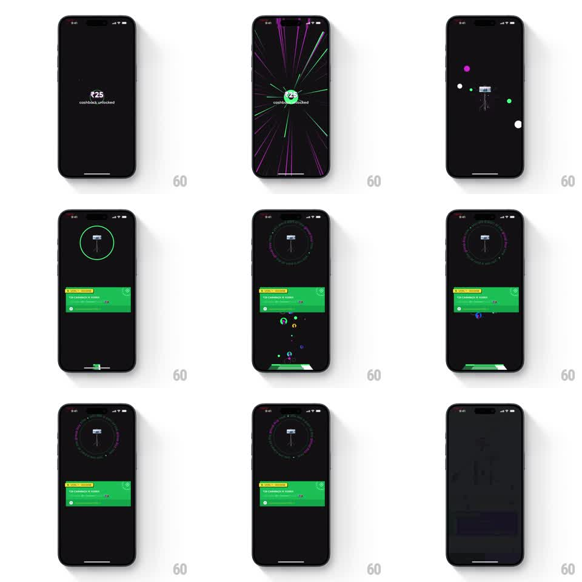

Media
Frame-by-frame

Rebuild this interaction 1:1: CRED's cashback-unlocked celebration after an order - "congrats" gives way to the amount, a warp burst of magenta arcs and green particles erupts, a ring dial materializes around the product, and a green success card slides up.

Rebuild this interaction 1:1: CRED's cashback-unlocked celebration after an order - "congrats" gives way to the amount, a warp burst of magenta arcs and green particles erupts, a ring dial materializes around the product, and a green success card slides up. ## Integration Integration: stack-agnostic spec - springs given as stiffness/damping, timed motions as duration + curve; map every value to your framework and animation library of choice. ## Scene CRED order-success sequence, black: "congrats" in white; "₹25 / cashback unlocked"; then the celebration stage - a small product tag at center wrapped by a segmented circular dial (pink and green ticks), magenta arc sweeps cornering the frame, scattered green particle dots; finally a bright green success card at the bottom with the cashback summary and actions. ## Motion spec Pattern: staged reward reveal - warp burst, dial assembly, card slide-up. - "congrats" pops in (scale 0.9 -> 1, spring ~380/16), holds 700ms, then warps out (scale -> 1.4, fade, 250ms) as "₹25 cashback unlocked" lands the same way. - The burst: magenta arcs sweep in from the screen corners (stroke draw, 400ms each, staggered 80ms) while 8-12 green dots fly outward from center (gravity-free, 500ms, easing out to rest). - The dial assembles around the product: ticks draw on clockwise (500ms), alternating pink/green; the product tag fades in at the center (200ms) with a slight scale-up. - The green card slides up from the bottom (translateY 100% -> 0, spring ~320/20) and its rows stagger in (60ms apart, fade + rise 8px); a few green particles drift up behind it. - The dial keeps a slow idle rotation (12s per turn) under the card. ## Calibration - High energy, short dwell: the whole sequence from congrats to card rests in ~2.5s. - Magenta is decoration; green is the reward - the card and particles own green. ## Reduced motion Text crossfades (250ms); card slides up 300ms without particles or arcs. ## Don't miss - The dial's tick colors alternate in a fixed rhythm - it reads as a gauge, not confetti. - The card's top edge overlaps the dial's lower arc, layering the win over the stage.